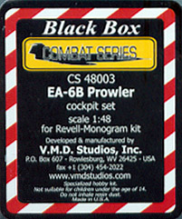

V.M.D. Studios Black Box Combat Series EA-6B Prowler Cockpit
Kit #4803 MSRP $35.00
Images and text Copyright � 2005 by Matt Swan

Two years ago when Revell-Monogram reissued their venerable EA-6B Prowler in 1/48 scale the folks at V.M.D. Studios, better known to the modeling community as Black Box, dusted off their old molds for the replacement cockpit. I guess after some thought it was determined that there were a few items that could be improved and they went to work redesigning and adding to this highly detailed aftermarket package. After over a year of prep time during which the Revell-Monogram kit has once again been discontinued from production the new and improved Black Box Combat series replacement pit from V.M.D. Studios has hit the modeling world.
The kit has had the basic tub refurbished, has new sidewalls, new seats and new instrument panels for both early and late version aircraft. All this arrives in a good sized clear plastic box with smaller pieces packaged in small zip-lock bags and the tub wrapped in foam sheet. It�s a snug fit that helps to prevent shifting during transit but not so snug as to cause part warpage. The parts have medium sized pour stubs and an exceptional level of detail. I did find a few minor flaws in some parts, one of the ejection seat spacers had a small casting defect in one corner and two small pieces of wiring inside the cockpit tub were fractured. All three of these items look to be easily and quickly repaired with a spot of superglue. The parts do not seem to have any flash on them, no visible mold separation lines or micro bubbles. It�s difficult to find those bubbles until some primer hits the surface but from previous experience with Black Box parts I have high hopes for few problems.
Included with the kit is an A4 size sheet of instructions printed on both front and back. There is a complete part listing where all parts are numbered but when you go to the two exploded view assembly instructions the numbers do not match up. I found four parts that were incorrectly numbered and have placed the correct parts numbers below the actual parts in the following image.
Taking a look at some of the larger key pieces verses the original kit pieces there really is no comparison. The cockpit tub has lots of well detailed wiring, the seat have a great cross hatch texture that unfortunately is lost in the picture, the instrument panels offer a choice of analog gauges or multi-function CRT displays.
Now look at the kit parts and you can clearly see how this resin package will improve the overall appearance of your model. The package includes two sets of throttle controls, replacement rudder pedals, various instrument packages and shields. The only shortfall I could find was the instructions were not very clear on the placement of the ejection linkage bar between the front seats.
I think that it is more than obvious how this package will improve your model and I feel it should be high on your list of aftermarket pieces for this old Revell-Monogram kit. Considering the $35.00 suggested retail price and all the resin that you get it is a pretty good buy. This is not the only accessory package that Black Box has for the kit either. About six months ago they released a wingfold kit that could be added to this to make for something a little more that your straight out of the box build.